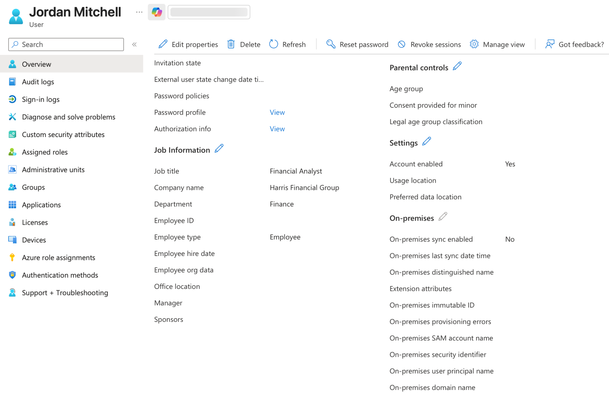
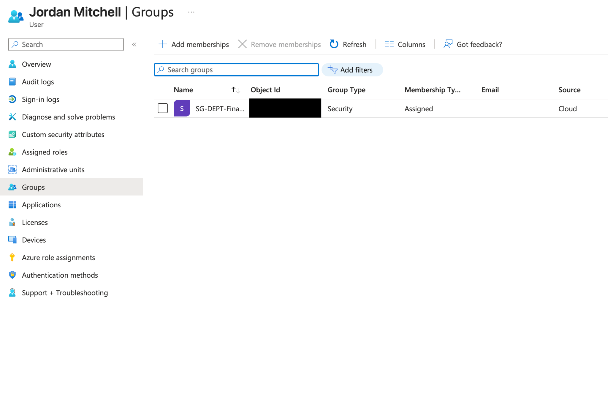
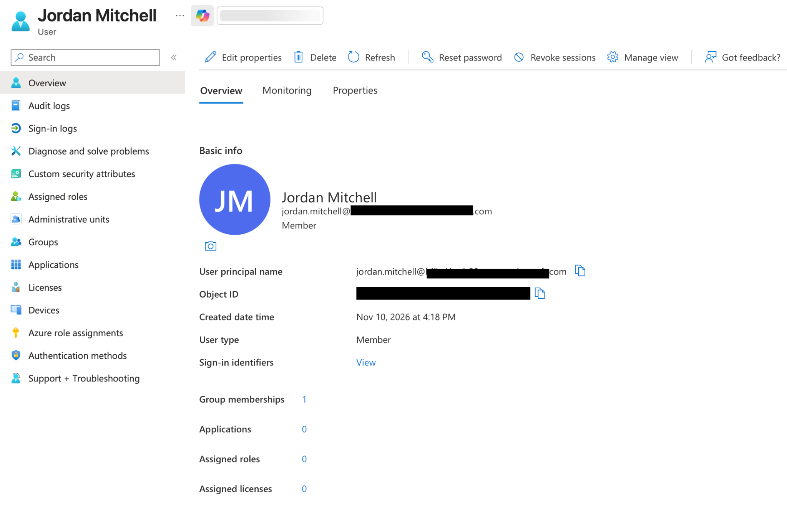
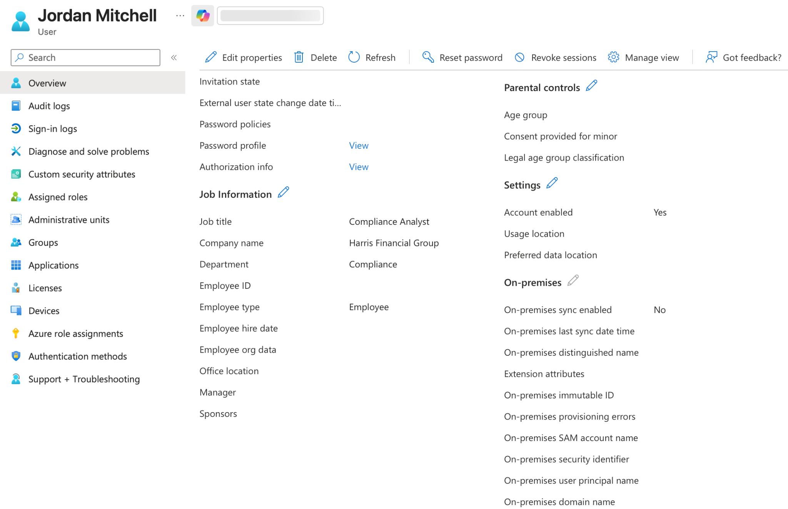
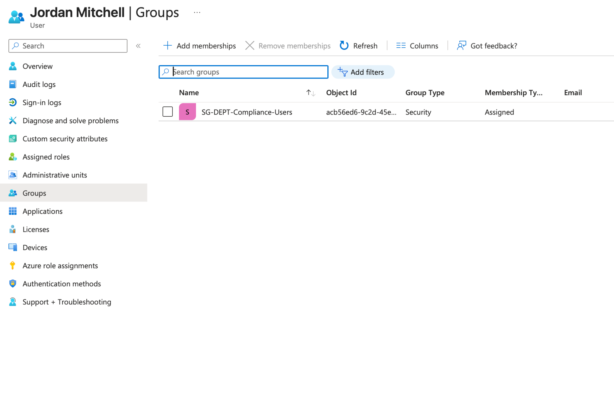
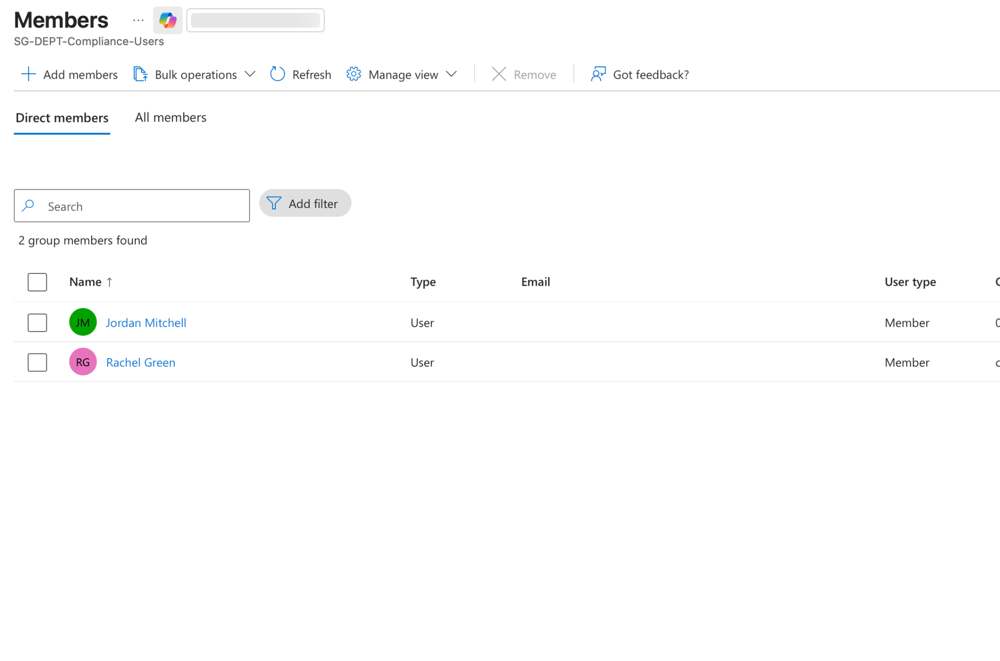
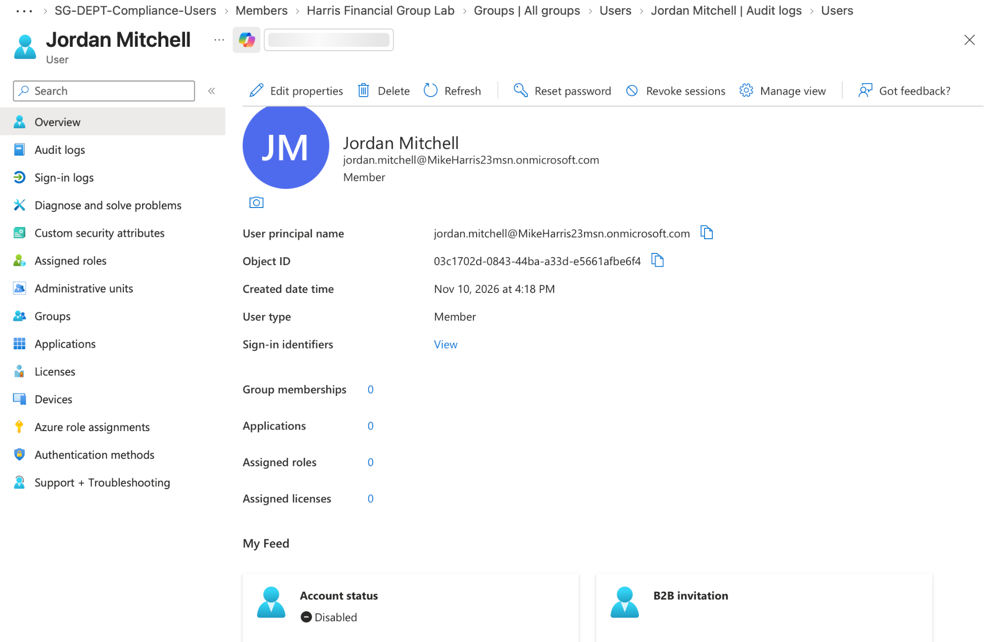
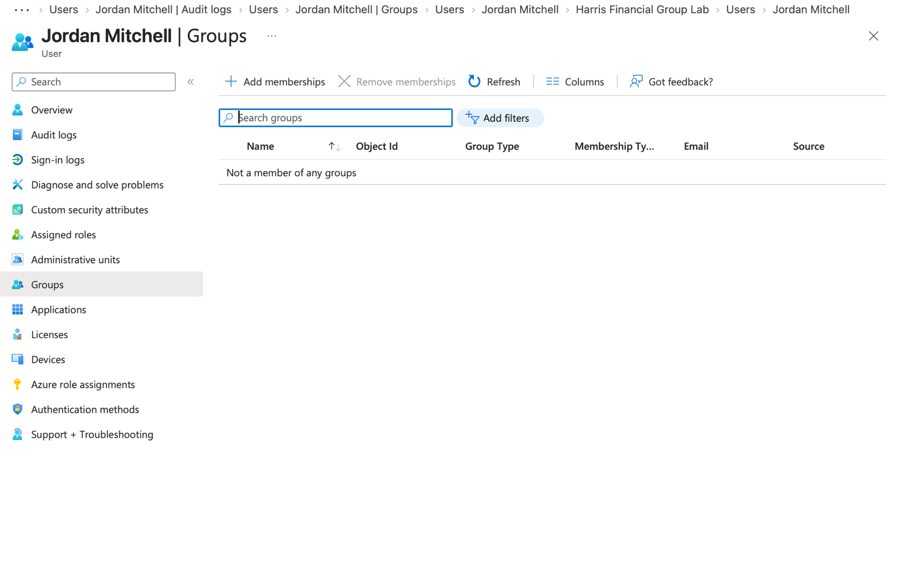
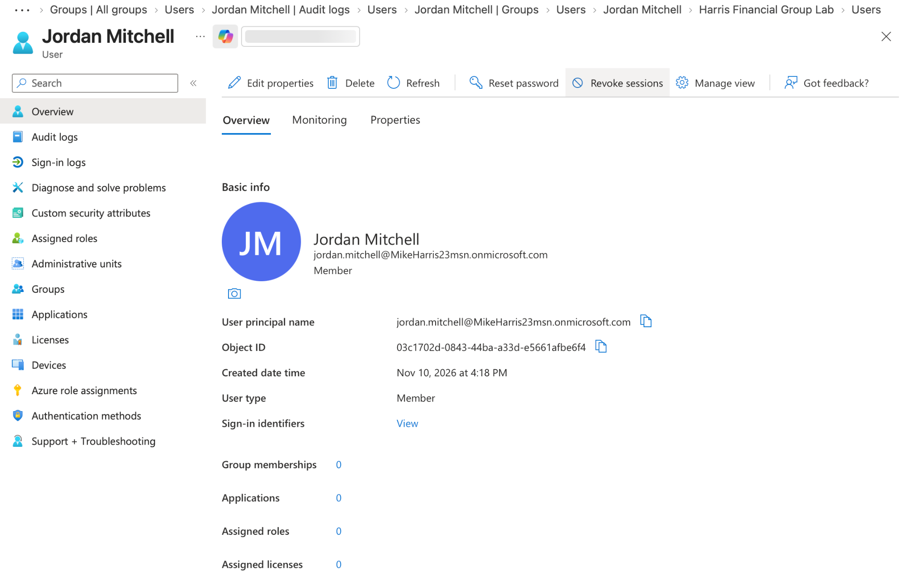

Day 1 / Joiner
Provision Finance identity
Created Jordan’s cloud user profile in Finance with the Financial Analyst job title and a departmental security-group membership.
- Account enabled
- Finance group access
- No administrative roles
A three-stage identity lifecycle exercise for a simulated employee, Jordan Mitchell, in Harris Financial Group Lab, a fictional financial-services organization. The exercise demonstrates departmental provisioning, access updates after a transfer, and account offboarding in Microsoft Entra ID Free.
Created Jordan’s cloud user profile in Finance with the Financial Analyst job title and a departmental security-group membership.
Changed the department to Compliance and the job title to Compliance Analyst, removing prior Finance access and assigning the Compliance group.
Disabled Jordan’s account and removed remaining security-group memberships, then reviewed the final account state.
Screenshots are organized in lifecycle order. Select a screenshot to view the full-size original. This is a fictional lab identity; identifiers visible in the images belong to the lab environment.

Finance department and Financial Analyst job title, with the account enabled.

Jordan’s group view shows one Finance security-group membership.

One group membership, zero applications and zero assigned roles.

Updated job title to Compliance Analyst and department to Compliance.

Jordan appears as a member of the Compliance departmental security group.

Group member list confirms Jordan Mitchell in SG-DEPT-Compliance-Users.

Account status shows Disabled, with zero groups, applications and roles.

Group view explicitly states that Jordan is not a member of any groups.

Account overview confirms zero group memberships, applications and roles.
Controls demonstrated: departmental group-based access, least-privilege review, removal of outdated access following a transfer, and account disablement at offboarding.
Evidence boundary: The screenshots show user profiles, group membership, account status, and assignment counts. They do not independently establish audit-log events, effective resource permissions, or successful session revocation. Audit logs were not available to the lab administrator at the time of documentation.
Lab scope: Microsoft Entra ID Free, fictional employees and organization; not a production deployment.